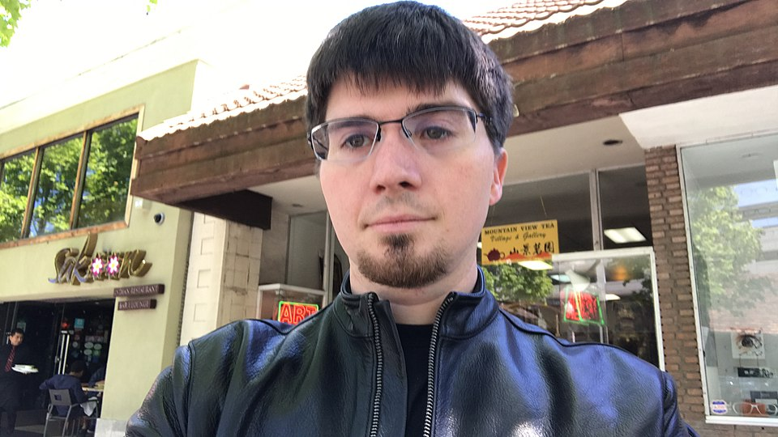

Ian Goodfellow · 2014 박사과정생 시절
2014년 어느 저녁, 몬트리올 대학의 박사과정생 Ian Goodfellow가 동료들과 한 술집에 있었습니다. 어떤 이미지가 진짜인지 가짜인지 판별해주는 신경망 이야기를 하다가, 그가 농담처럼 한마디 던집니다 — “그 판별기를 속이려고 학습하는 또 다른 신경망을 같이 키우면 어떨까?”
그날 밤 집에 돌아간 그는 정말로 코드를 짜기 시작합니다. 다음 날 아침에는 — 실제로 작동하는 첫 GAN이 만들어져 있었습니다. 두 신경망이 서로를 속이고 잡아내며 함께 자라는 구조. 가짜 이미지를 만드는 ‘위조꾼’과 진위를 가리는 ‘감별사’가 같은 방에 마주 앉은 셈이었습니다.